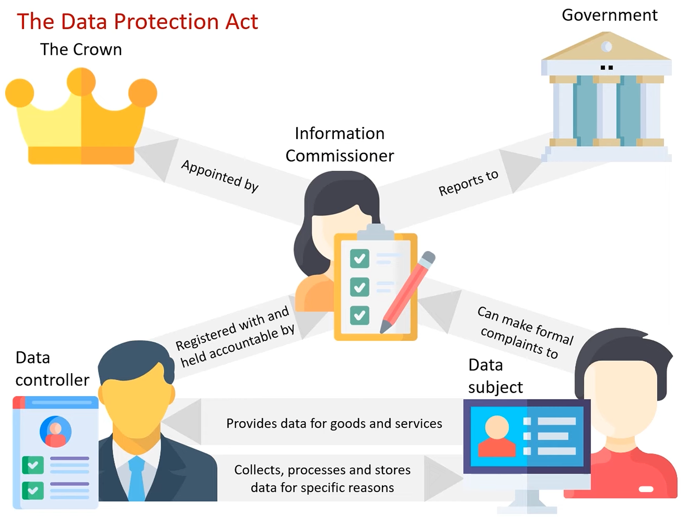

Computer legislation acts are designed to protect the rights of data subjects by providing legal barriers that limit data usage, selling and storage. Legislation used in the UK includes:
DPA (Data Protection Act) - 1998, 2018
GDPR (General Data Protection Regulations) - 2016
CMA (Computer Misuse Act) - 1990
CDPA (Copyright, Designs and Patents Act) - 1988
RIPA (Regulatory of Investigatory Powers Act) - 2000
What is the DPA of 1998?
The Data Protection Act of 1998 focused on several main principles of protection. Data should be...

Held for specific reasons
Used only for its intended purpose
Collected and used fairly
Kept accurate and up-to-date
Kept only as long as it is necessary
Kept within the EEA (European Economic Area)
Adequate, not excessive
Kept safe and secure
These limited what data controllers could do so that personal or sensitive data was not widely shared. The rights given to the data subject are shown here:
Right to access
Right to prevent distress
Right to correct
Right to prevent direct marketing
Right to compensation
Right to prevent automatic decisions
Right to complain to the information commissioner
Right to delete your own data
What revisions did the DPA of 2018 make?
The Data Protection Act of 2018 requires controllers have to share evidence that they were adhering to the act.
These are examples of personal and sensitive data:
Personal
Name
Date of Birth
Address
Bank Details
Financial Transactions
Sensitive
Nationality
Ethnicity
Political Beliefs
Trade Union Membership
Genetics
Biometrics
Health
Sexual Orientation
Roles
There are the three roles we will discuss related to data usage. The information commissioner, data subjects, and data controllers.
Information Commissioner
The information commissioner works to enforce the DPA. As of January 30th 2026, John Edwards is the current information commissioner and has been since the 3rd January 2022.
Data Controller
Data controllers are individuals or organisations that hold the data of data subjects. They determine what to do with your data; how to collect, use and manage it.
Data Subject
The data subject is any individual who has their personal data collected, used and managed. Their specific rights are mentioned above.
QUIZ I - DPA & GDPR
What is the name of the current information commissioner? Click the correct answer below:
What does the 2018 revision of the DPA force Data Controllers to do?
What is the smallest number?
What is the Computer Misuse Act of 1990?
The Computer Misuse Act (CMA) was needed as technology developed and protected against digital theft and hacking. These are the specific actions that it made illegal:
Accessing a computer system without authorisation
Accessing digital information unauthorised with the intent of committing another crime
Modifying data without authorisation
Developing, supplying or obtaining tools used to commit the above offences
These laws protect users from hackers, malware, viruses, fraudsters, blackmailers and people who are seeking revenge on their former place of work. It sadly does not stop these actions from occuring but the penalties are high.
Unauthorised access - up to £50,00 fine and up to 6 months in prison
Unauthorised access with intent to commit further crime - unlimited fine and up to 5 years in prison
Unauthorised data modification - unlimited fine and up to 5 years in prison
Developing, supplying or obtaining tools to commit computer misuse offences - unlimited fine and 10 years in prison
This means deleting someone's minecraft world without permission is illegal.
QUIZ II - CMA
Which one of these is legal? Click the correct answer below:
Many young people unintentionally violate the laws of the CMA, however, if the purpotrator is unaware of the laws of the CMA, they are not legally guilty.
How many years can you be imprisoned up to for developing, suppling or obtaining tools for committing computer misuse offences?
What is the Copyright, Designs and Patents Act of 1988?
This act protects intellectual property (IP) - things you invent, create or design - from copycats using them for unauthorised commercial use. This means that people cannot steal or copy things such as brand names and logos, recipes, product desings and more that are under these protections. There are several ways in which this is done. The act contains the laws on:
Steamboat Willie, a 1928 cartoon animation directed by Walt Disney and Ub Iwerks final became part of the public domain in 2024. (Its copyright was extended various times as it is under the juristiction of American law rather than UK law.)
Patents protect inventions, processes or technical improvements. The IP owner is given the right to produce, use, sell or license their creation. Patents generally last for 20 years except in special cases.
Licenses are granted by the owner of an IP to another person to allow them to use said IP, usually under specific terms and conditions. License terms can vary and be set for different lengths of time.
Trademarks protect symbols, words or logo (brand identity). Trademarks can last indefinitely as long as they are in use and are renewed. The trademark symbol looks like this: ™
What is the Regulation of Investigatory Powers Act of 2000?
The Regulation of Investigatory Powers Act gives certain bodies, such as government security services, police, the fraud office, the office of fair trading and the environmental protection agency the right to monitor activity on the internet. These agencies can then scan for things linking to things such as terrorism, fraud, slavery, murders, environmental damage and many other serious matters. These are the 6 parts of the act:
Internet Security Providers (ISPs) must provide access to customer communications
Interception activities cannot be revealed in court
Mass surveillance of communications is permitted
Monitoring an individual's internet activities is permitted
Access is given to protected information
ISPs must install equipment that allow surveillance to be done
Many of these point show that businesses and ISPs are required to provide any digital communications and activity when asked, as well as have a way to store that data.
Some people are worried about the ethics of the act because of how invasive it is and because of what could happen if it came into the wrong hands. Some also feel that mass surveillance could lead to a loss of freedom of speech and widespread censorship.
Thanks for reading innit. copyright by me and [current ICO].
For more information, follow these links: Roles, The Rights of Data Subjects, Other Online Legislation